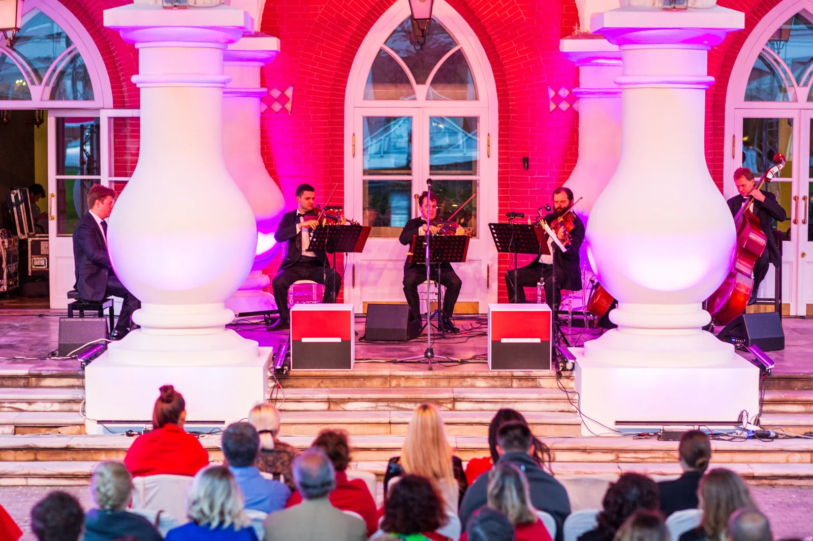
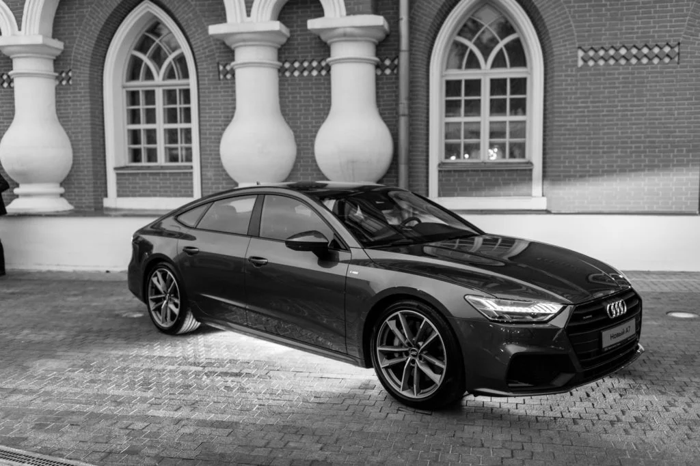
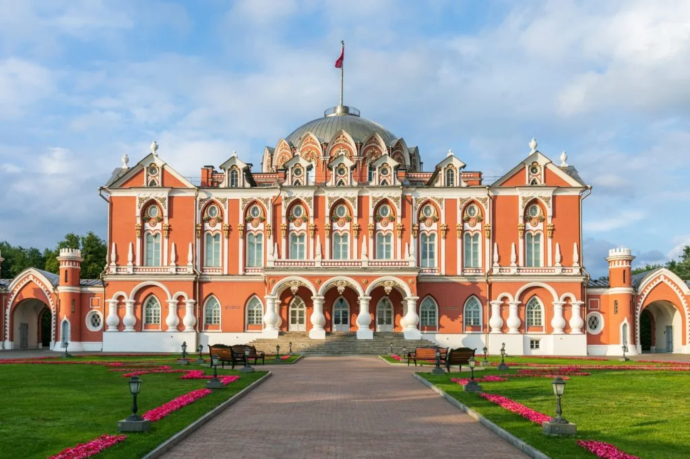
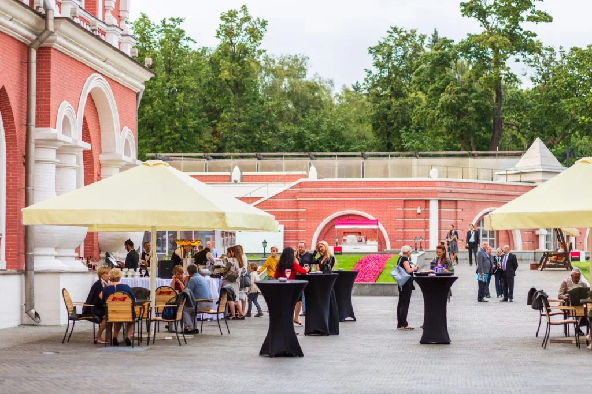
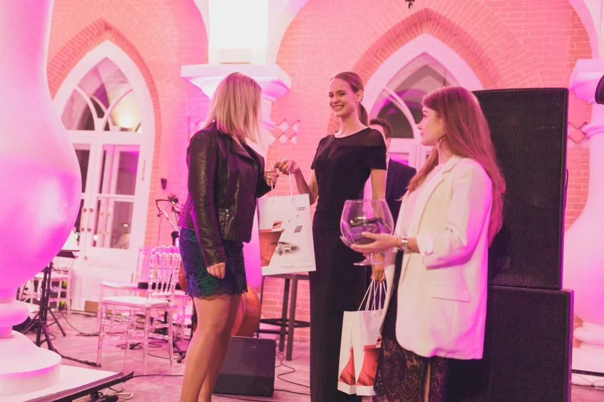
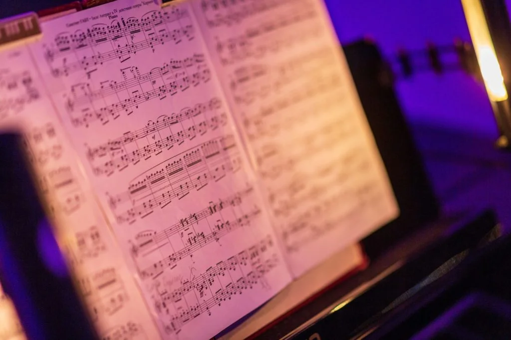
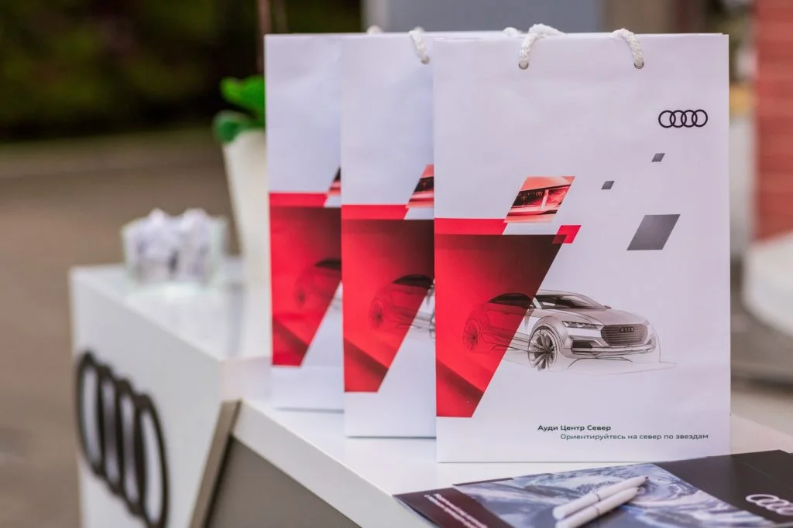
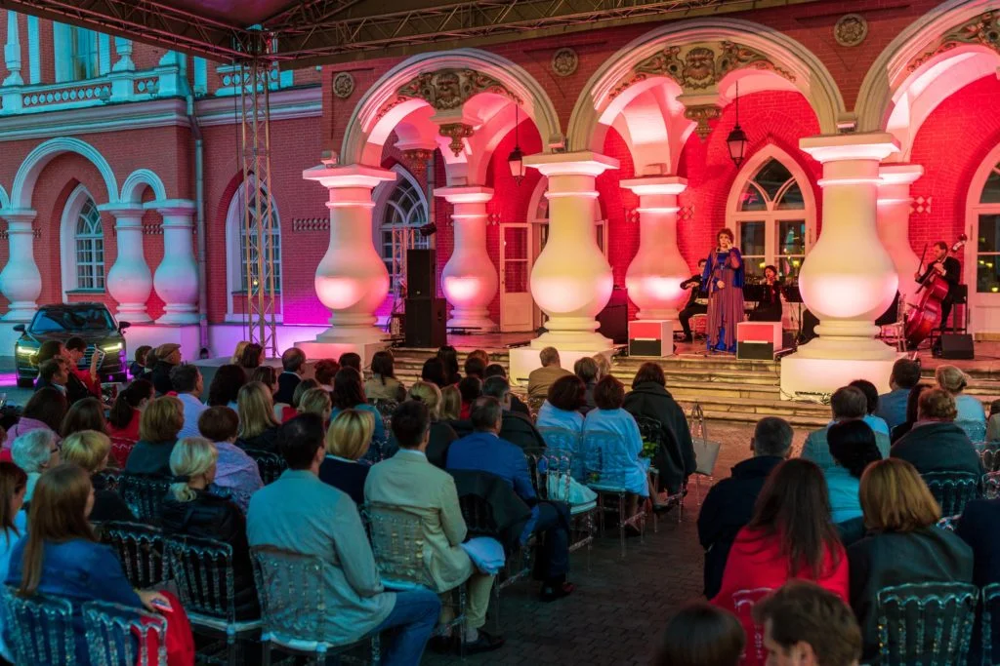
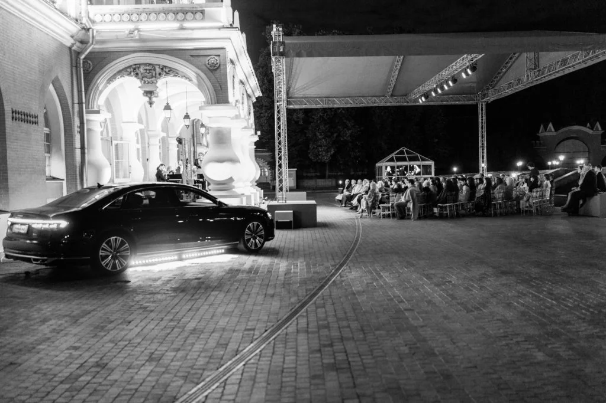

КЛИЕНТСКОЕ МЕРОПРИЯТИЕ
Опера
во дворце.
Живая музыка, дворцовая архитектура и Audi — вечер, в котором впечатление складывается из деталей.
25 июля 2018100 гостейМузыкальный вечер
Особая встреча.
Выразительная сцена.
«Опера во дворце» — проект для «Рольф Audi Центр Север», собравший 100 гостей. Вечер объединил автомобильную экспозицию, общение и музыкальную программу на фоне дворцовой архитектуры.
Подсвеченные арки и колонны стали обрамлением выступления. Рядом с историческими фасадами современные линии Audi звучали особенно выразительно.
100гостей
25.07.2018дата события
AudiРольф Центр Север
02 / ДИАЛОГСовременные линии.
Современные линии.
Классическое окружение.
Автомобиль у дворца — самостоятельный визуальный акцент. Строгий силуэт, ритм окон и пластика фасада создают кадр, в котором архитектура и дизайн дополняют друг друга.

03 / ФОТОИСТОРИЯ
Вечер в деталях.







СЛЕДУЮЩИЙ ПРОЕКТ